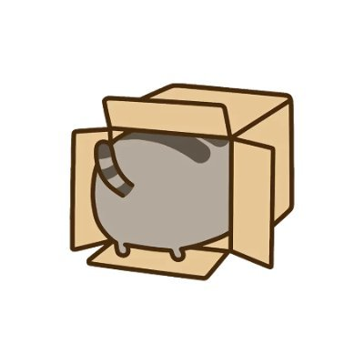

好奇猫a
@acnekot
RT @AcboxLiu: 半年前，我们就在尝试着Agent的虚拟机云运行方案，然后诞生了一个2k stars的开源项目；今天，我们正式推出Memoh的官方SaaS服务 —— 或者我们可以叫他 AaaS (Agent as a Service)
他是一个Multi-agent…

📦Acbox
@AcboxLiu
半年前，我们就在尝试着Agent的虚拟机云运行方案，然后诞生了一个2k stars的开源项目；今天，我们正式推出Memoh的官方SaaS服务 —— 或者我们可以叫他 AaaS (Agent as a Service)
他是一个Multi-agent平台，每一个Agent都有他自己独立的运行环境，文件系统，长期记忆，桌面环境 —— 不管是使用自己的 https://t.co/MPqxv1EMfN